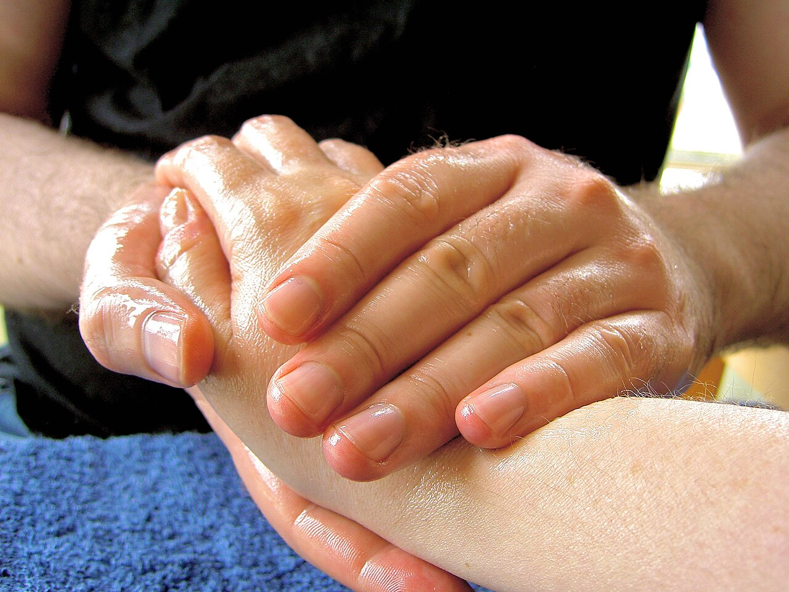
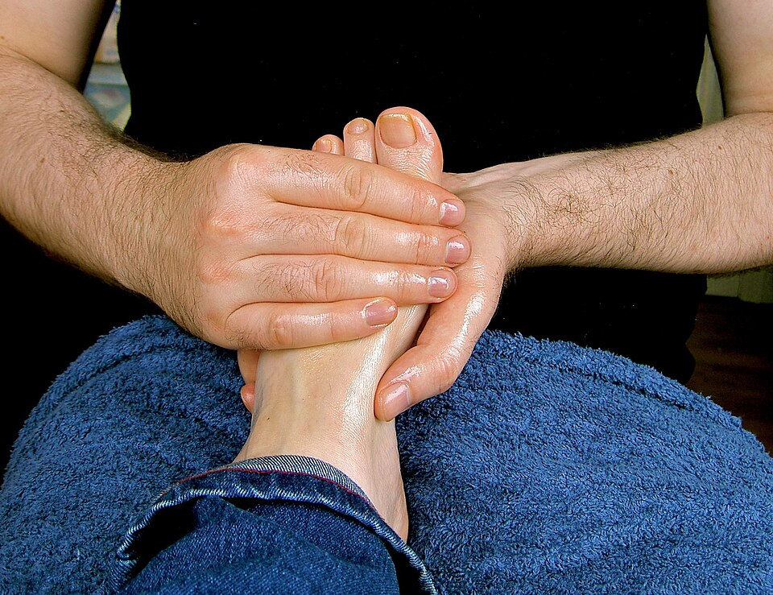

Девять лёгких приёмов. Только CSS и пара строк JS, без 3D-библиотек: страница весит как одна фотография и не тормозит на слабом телефоне. Правило одно: свет падает сверху слева, значит все тени уходят вниз и вправо, а блики сверху.
Одна размытая тень даёт «грязное облако». Настоящий предмет даёт плотную тень у самого края, мягкую чуть дальше и широкую лёгкую совсем далеко. Плюс светлая кромка сверху: --sh-2, --edge.
Градиент светлее сверху, светлая полоска по верхнему краю, тёмная по нижнему, тень цвета самой кнопки. При нажатии тень уходит внутрь, кнопка «вдавливается».
Светлое поле вокруг фото, тень снаружи и лёгкая тень внутри по краю снимка. Небольшой наклон на 1-2° делает его похожим на настоящую карточку на столе. Хорошо для подборок работ, дипломов, отзывов.

За фото эксперта мягкое тёплое пятно, как от лампы в студии. На самом снимке светлее угол, откуда падает свет, и чуть темнее края. Фото «встаёт» над фоном.

Предмет (флакон, книга, фото эксперта без фона) перекрывает край карточки и отбрасывает тень на неё. Глаз сразу читает: он ближе. Для вырезанного PNG работает filter: drop-shadow, тень идёт по контуру.
Дальний слой светлее, бледнее и чуть размыт, ближний самый контрастный и с самой длинной тенью. Так работает воздушная перспектива на картинах, и так же она работает на экране.
Карточка чуть поворачивается за мышью (до 6°), блик бежит по поверхности. Только на компьютере с мышью и только если человек не просил «уменьшить движение». На телефоне карточка просто стоит.
Тёплые и светлые цвета выступают вперёд, холодные и приглушённые отходят назад. Поэтому кнопку и главное делаем тёплым акцентом, а фоновые подложки холоднее и тише.
Реалистичное фото на фоне, снизу лёгкое затемнение для читаемости, текст на карточке из матового стекла со светлой кромкой. Размытие держим умеренным (10-14 px) и только на одной-двух карточках, иначе слабые телефоны начнут тормозить.